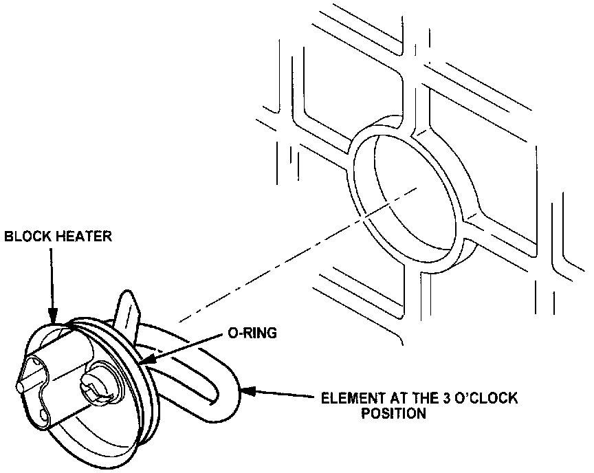

Block Heater - Installation Cautions
Bulletin No. 001/99Issued 03/17/99
Revised
Category
B (09)
Applicable Model/s
1999 Miata
Subject
BLOCK HEATER INSTALLATION CAUTIONS
APPLICABLE MODEL(S)/VINS
All 1999 Miata.
DESCRIPTION
When installing a block heater, observe the following cautions:

Caution
^ Be sure the element is maintained at the 3 O'clock position as shown, and that it does not rotate during installation. If the block heater rotates while being tightened, damage to the 0-ring may occur resulting in a coolant leak. This caution is very important and is not stated in the early version of the installation instructions which were packed with the kit. The instructions in the current production kits have been updated to contain this caution. See illustration.
^ Be sure to thoroughly lubricate the 0-ring only with the grease provided (silicone based) in the kit. Other types of grease will damage the 0-ring.